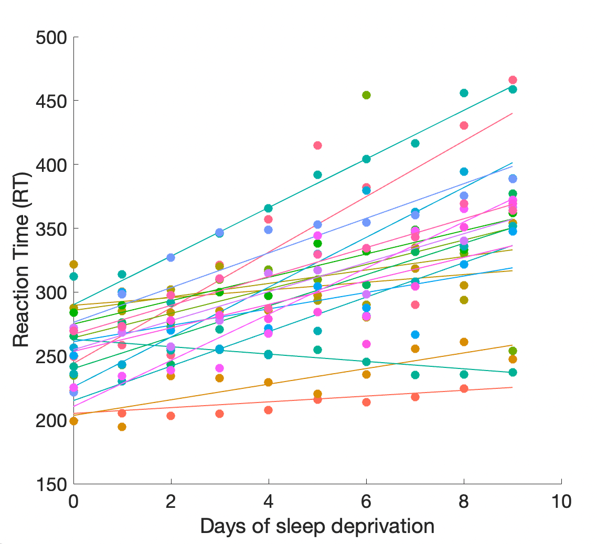
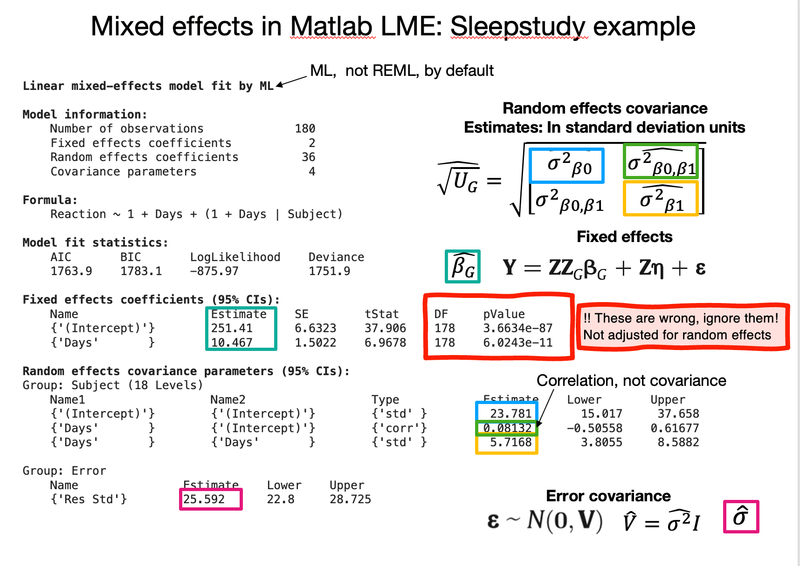
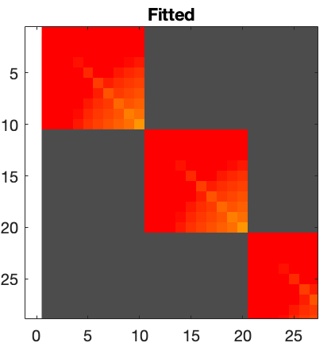
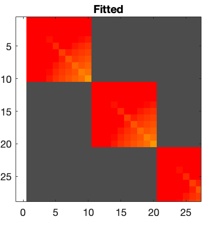

Mixed effects: Examples#
Ashar dataset#
Now that we’ve loaded the Ashar back pain dataset, we can try running a mixed effects model and compare.
Instead of organizing data in a “wide format” table with one row per participant, we can use the “long format” table, in which \(y\) (i.e., Pain) is an \([mk x 1]\) vector with \(k\) values measured for each of \(m\) participants. We model the correlation between within-person repeated measures (Pre and Post-treatment pain) by including a random effect of participant in the error model.
Sleepstudy dataset#
This is a classic, and well-behaved, dataset included in R. We include it for comparison across methods and output.
Here is a plot of the data (generated using part of the script below) 
We’ll fit this 3 ways:
Matlab fitlme
CANlab IGLS
CANlab glmfit_multilevel
Comparing output from different packages#
Let’s identify some key corresponding output in each model.
fitlme#


lmer in R#


IGLS#

 

Activities#
Fit the same model in R and/or python
Make a table comparing t-values, P-values, and dfe for the different methods (3 here and 1-2 new ones)
Compare effects of different options (e.g., ReML vs. ML, bootstrap)
##Mixed effects in Python
Mixed effects models are available in R (lmer, lme4) and Matlab (fitlme and related others).
There are a couple of options in Python, though I’m not sure how well validated these are. Python can reportedly access LMER in R using rpy2 and %Rmagic or Pymer4
Here are some possibly helpful links: https://www.pythonfordatascience.org/mixed-effects-regression-python/ https://towardsdatascience.com/how-to-run-linear-mixed-effects-models-in-python-jupyter-notebooks-4f8079c4b589 https://gist.github.com/jcheong0428/f25b47405d9d328691c102787bc92175
Google Colab notebook https://gist.github.com/jcheong0428/f25b47405d9d328691c102787bc92175
https://www.statsmodels.org/stable/examples/notebooks/generated/mixed_lm_example.html